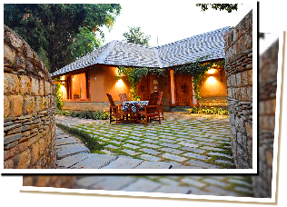
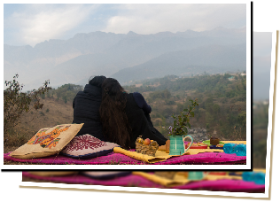
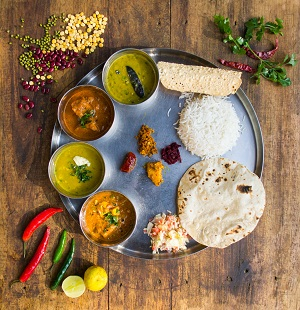

“We welcome you to our Eco-friendly home in the middle of our beautiful tea estate. We are so in love with our home that we felt this incredible place should be shared with the world. You will love living with us on a working tea estate, knowing about tea and eating delicious meals cooked from local and homegrown produce.”
~ Upasana and Surya Prakash, Hosts at the Lodge, Palampur
Please email us at untravel@indiauntravelled.com to plan and book your travels.
Overview
Wah Tea Estate has been part of the Prakash family since 1953. The previous owner, Sir Sikandar Hayat–Khan was the son of the Nawab of ‘Wah’, a town in Pakistan, from which the estate derives its name. The estate is one of the largest manufacturers of tea in the Kangra region. The teas are completely pesticide free, and carefully hand–plucked.
The Lodge came into existence when the owners decided to build themselves a home at the estate They were inspired by the local artisan’s craftsmanship with mud, wood and stone and decided to put their skill to use. The river stone and slate is hand chiseled and crafted to give it the feel of the local Kangra architecture. The bricks used to build the cottages are from the mud which was excavated when the foundation was being built. These bricks are all naturally dried in the sun. Even the white colour of the walls has been done with a natural formula, after extensive research on homes around the world.
The wood used at the lodge is originally from the Old Palampur Courthouse, which was demolished to be rebuilt a few years ago. Roof lining details, banisters from witness stands, and even whole doors and windows are originally from the Old Courthouse. Rest of the wood is pine and cedar from the Estate, in place of which multiple trees were planted.
Please email us at untravel@indiauntravelled.com to plan and book your travels.
Stay
The homestay has six rooms to be given out to guests. The rooms are tastefully done, without compromising on the eco friendliness, which is the underlining theme at the lodge. All rooms have attached washrooms. The rooms overlook a beautiful garden which has a variety of plants and trees and also serves as a beautiful setting for meals in the open and of course the Bonfire or Bar-be-que at nights. Private sit-outs can be arranged for guests outside of their rooms or in the garden.
The dining area in the main villa also has a common sitting area where one can enjoy reading/ watch TV or even strike up a conversation with the hosts and other guests.
Please email us at untravel@indiauntravelled.com to plan and book your travels.
Food & Drinks
Meals are an intimate affair at the Lodge. Almost everything served is grown organically in the kitchen garden or the green house which is a short walk into the tea estate from the Lodge. Get ready to bite into healthy as well as delicious meals from different cuisines. From Local Himachali Dham to Continental Baked Chicken to a wholesome south Indian meal! And not to forget, never ending cups of tea originating from the estate all around you! Guests can share any dietary requirements and the hosts strive to cater to guests preferences for all meals.
Please email us at untravel@indiauntravelled.com to plan and book your travels.
Activities

Palampur is at a distance of 250 Kms from Chandigarh in the Kangra region of Himachal Pradesh and is famous for its tea plantations. One can see the Dhauladhar range of the Himalayas from here and enjoy a host of activities in and around it. Listed below are a few of the activities that one can indulge in while staying at the lodge.
- Visit the tea factory
- Tea tasting session at the tea estate
- Paragliding at Bir-Billing
- Treks at Triund, Billing and Barot, with options for overnight tented stays
- Visit Andretta, a village world famous for pottery and Sobha Singh’s art gallery
- Try your hands at the potter’s wheel at Andretta
- Angling at Barot
- Picnic near the river
- Cycling tour of the Estate
- Cricket or badminton at The Lodge at Wah
- Board games at The Lodge at Wah
Please email us at untravel@indiauntravelled.com to plan and book your travels.
Costs
A stay at the lodge is priced at:
Twin sharing : INR 9000 a night, includes
All meals at the Lodge, Tea tasting session, Visit to tea factory.
For solo travellers Rs. 7,000 per night.
Kids aged 5 and below are free
Kids aged 6 to 14 chargeable at Rs. 1,000 per room per night
Additional person per room chargeable at Rs 2,500 per room per night
Cancellation Policy
- Cancellation/amendment before 15 days: Free
- Cancellation between 5 days and 15 days prior to arrival: 25% retention
- Cancellation between 0 days and 5 days prior to arrival: 100% retention.
- Please be advised Cancellation upon Arrival/No-show/Early Departure/Change of Dates falls under cancellation policy dependent on dates
- Reduction of accommodation booked will be treated as Cancellation.
- Cancellations will only be accepted over emailed communication
Please email us at untravel@indiauntravelled.com to plan and book your travels.
Location
Palampur is situated in the Kangra valley of Himachal Pradesh and is at a distance of 500 Kms from Delhi and 250 Kms from Chandigarh. One can reach by road or travel to Pathankot by train and take a bus from there. The nearest airport is located in Gagal, near Dharamsala and is a short drive away.
Best time to visit:
Through the year. Every season rings its unique pleasures. April to October is a good time to visit as it’s the season for tea plucking. September to November is the season of lush green surroundings and perfect weather.
Things to Note
- Cash and ATMs: Cash and Card are accepted at the lodge. Nearest ATM s in Rajpur, a couple of kms away
- Phone, Internet and TV: There are no TVs in the rooms, there is one in the common area. Wifi is available. Most phone networks catch erratic signal here.
- Pets: Pets are welcome.
- Alcohol: Please bring your own alcohol.
Checklist
Many of us have pre-conceived notions about rural India. Leave them behind, travel with an open mind, and you'll be pleasantly surprised with what you find.
- Warm clothes if you’re travelling in winter
- Walking shoes
- Books to read , stationery to write, paint & draw, basically anything you love to do
- Binoculars for bird watching
- Cosmetics you need
- Prescription medicines, if any
- Camera & batteries / charger
Please email us at untravel@indiauntravelled.com to plan and book your travels.
Photo Gallery
- The main villa
- A Cottage room
- Sitout outside a cottage
- View of the room
- Windows all around
 Another view
Another view- Washroom
- Washroom2
- Delicious meals
- Yummy breakfasts!
- The library corner
- Picnic
 Inside the tea factory
Inside the tea factory- On the way to the factory
 Organic farming at the Estate
Organic farming at the Estate- Quite evenings
- Tea Estate
{kind=link}
{kind=link}
{kind=link}
{kind=link}
{kind=link}
{kind=link}
{kind=link}
{kind=link}
{kind=link}
{kind=link}
{kind=link}
{kind=link}
{kind=link}
{kind=link}
Please email us at untravel@indiauntravelled.com to plan and book your travels.
Reviews
“My experience at the Lodge was amazing. The hosts were welcoming and great at hospitality. Food was sumptuous. I don't mind staying with them again, if I get a chance.” ~Charu Babbar, travelled Solo in March 2017
Please email us at untravel@indiauntravelled.com to plan and book your travels.
Responsible Travel
The Prakash’s are highly inclined towards Eco friendly practices both at the lodge as well as in the Teas Estate. The Lodge was built with the aim of providing a luxurious stay in the tea estate without harming the environment in any way. The villas at The Lodge are made of mud, slate and wood. The food prepared at the lodge is locally grown. Most ingredients are from the kitchen garden and the green house, both of which are completely organic.
The hosts also invest in cooperative farming, the tea estate workers have been given plots of land and seeds to grow their own produce. Only what is needed for The Lodge (less than 10% of what they grow) is requested from them, rest is for them to sell or use as they see fit. The Lodge has also provided for job opportunities for the locals. All the workers in the garden, kitchen and housekeeping are from the neighboring villages and have been trained on the job by the hosts and the Manager, Nikita Patel.
Below are some tips to travel responsibly while in Palampur:
- Carry a good water bottle. Refill it at the homestay. Refrain from buying numerous plastic mineral water bottles. The Lodge provides filtered water to all guests.
- Pack your bags with environmentally friendly things. Carry as little plastic as possible.
- Do not litter or leave behind any non-biodegradable waste.
- What you wear has an impact. Dress appropriately, especially when you walk into the villages.
- Respect the local culture and refrain from physical intimacy in public places.
- Experiment with local and fusion food served from the host kitchen. Ask for modifications in the food according to your taste, instead of wasting it.
- Seek permission before photographing people, so as to respect their privacy.
- Please do not pluck any plants and flowers, and do not disturb the wildlife.